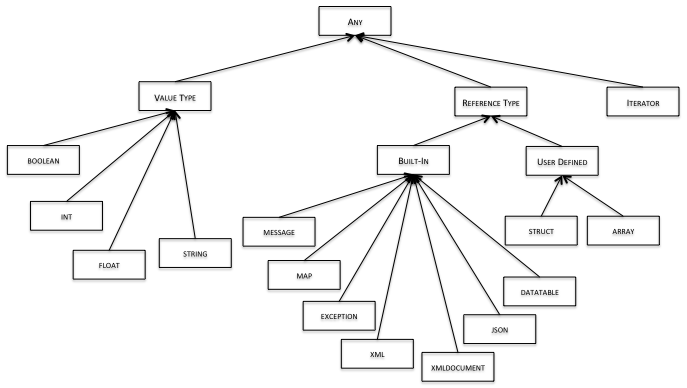

Types, Variables & Constants
The Ballerina type system has value types and reference types. Ballerina comes with a set of built-in value types, a set of built-in reference types, array & struct type constructors to create new reference types and an iterator type constructor to create new iterators.
The type system is illustrated in the following:

The rest of this section explains the semantics of these types in detail.
Declaring & Initializing Variables
Variables declarations are considered statements in the language and can be interspersed with other statements in any order.
A VariableDeclaration has the following structure:
TypeName VariableName [ = Expression];
Variables can be initialized using the standard literal value syntax for that type of variable or using expressions consisting of literal values and any other variables that are in-scope and already initialized. See the 'Literal Values' subsection below for the syntax for literal values for value types, built-in reference types and user defined reference types.
Note that variable declarations are considered to be statements of the language and can be done any place where a statement is allowed. See Statements.
Allocating & Deallocating Variables
All value typed variables are allocated on the stack, while all reference typed variables are allocated on the heap. Value typed variables are deallocated when they go out of scope and all reference typed variables are garbage collected when they are no longer in use.
As all reference typed variables are allocated on the heap, they must be explicitly allocated. This can be done by assigning them a literal value (see the 'Literal Values' subsection below) or by simply creating an empty value.
The any Type
NOTE: We are planning to add a type named
anyto be the root of the type system. This will be used to represent a variable of any type in the type system and will have additional constraints.
Value Types
Ballerina includes the following value types: - boolean - int - float - string
The types int and float both support 64-bit IEEE754 arithmetic. The boolean type has only two values: true and false. The string type operates similar to value types in that assignment and comparison involve the full value and not the pointer.
NOTE: Earlier versions of the language (while it was under development) we had additional types such as long and double. Those have been removed but there are some remnants in the implementation. The only valid value types are those listed above and the implementation will be cleaned up shortly.
Value types can be initialized at declaration by assigning a value of that type. If they are not initialized they have the following default values: int: 0, float: 0.0, string: "" (empty string, not null) and boolean: false.
NOTE: We are considering making the default value of a string to be null.
Literal values for these types are written using standard formats for writing integral values and floating point values; the grammar has the exact specification.
User-Defined Reference Types
Structured Types (Records)
User defined record types are defined using the struct keyword as follows:
struct TypeName {
TypeName FieldName;+
}
Variables of a struct type are defined by using the TypeName to declare the variable:
TypeName VariableName;
The default value of a struct variable is null.
Variables of struct types can be initialized at declaration time or later using the following syntax:
VariableName = { FieldName : Expression, .. FieldName : Expression};
This results in a new instance of the struct being created with the named fields assigned the indicated values. If a field is not named then it has the default value for that type when the struct is created. Thus, structs with no values assigned can be created by assigning the value {}.
Arrays
Array of any type are defined using the array constructor [] next to any type as follows:
TypeName[] VariableName;
The default value of an array variable is null.
All arrays are unbounded in length and support 0 based indexing. Arrays may be sparse as well and they will grow to meet whatever size needed based on the index (subject to memory availability of course).
Array typed variables can be initialized at declaration time or later using the following syntax:
VariableName = [ Expression, Expression, ... ];
If there are no expressions given (i.e., the right hand side is []), then the variable will be initialized to an array of length 0. Else it will be array of the same length as the number of expressions with each value being stored in the corresponding index of the array.
NOTE: We are considering adding support for arrays of arrays (of arrays ...).
Built-In Reference Types
Ballerina comes with a pre-defined set of reference types which are key to supporting the types of programs that Ballerina developers are expected to write. These are supported by a set of standard library functions found in the packages ballerina.lang.*. This section defines each of these types and defines their usage.
Type: message
The message type is an opaque type used to represent a request to a resource. This approach is necessary to make the resource programming model network protocol independent. This is the case even though a given resource is always tied to a particular protocol as a service can only be bound to a single network protocol at a time.
Library functions for accessing information from this type are in the package ballerina.lang.message.
A variable of type message can be initialized to hold an empty message as follows:
message VarName = {};
Type: exception
The exception type, like message, is an opaque type used to hold an exception.
See Exception Handling for more information on exception handling and the exception type.
Type: map
The map type is a hash map with keys of type string to values of any type.
Library functions for accessing information from this type are in the package ballerina.lang.maps.
NOTE: A future version of the language will likely introduce syntax to constrain the value space of a map to a particular type. The syntax under consideration for that is map
VariableName. We are currently not considering expanding the key space beyond string.
Type: xml & xmldocument
The xml type is used to represent an XML element and xmldocument is used to represent a full XML document. Ballerina also understands XML Schema and allows one to declare that an element or document must conform to a particular schema.
XML element variables are declared in either of the following ways:
xml VariableName;
xml<{SchemaNamespaceName}SchemaTypeOrElementName> VariableName;
The first is a variable which may hold any XML element. The second is a variable whose value is an element which is of the indicated XML Schema type (if the name is that of an XML Schema Complex Type) or the element has the name and content model defined by the indicated XML Element declaration (if the name is that of an XML Schema Element declaration). Note that 'SchemaNamespaceName' may be empty, which means the type name is unqualified.
Similarly, the xmldocument type is used to represent a complete XML Document. Variables are declared as follows:
xmldocument VariableName;
xmldocument<{SchemaNamespaceName}DocumentElementTypeOrElementName> VariableName;
The first is a variable which may hold any XML document. The second is a variable who's value is an XML document whose document element conforms to the indicated XML Schema type or XML Element declaration, similar to the element case above.
Ballerina will not always perform runtime schema validation as that will inhibit performance - instead a library function will allow that to be done on demand. For better performance a Ballerina implementation is expected to stream the contents of XML documents and only load into memory what is needed based on how the element or document is used in the program.
NOTE: The Ballerina runtime implementation in version 0.8 does not currently support the scheme constraining mechanism explained above.
Literal XML values can be assigned to xml and xmldocument typed variables as follows:
xml VariableName = `<xml-element-name [namespace declarations] [attributes]>element-content</xml-element-name>`;
The same syntax is used to assign a literal value to a variable of type xmldocument.
Within the literal XML expression (enclosed within back quote characters), other in-scope variables can be referred to use the syntax ${VariableName} and that will be replaced by the value of the variable.
NOTE: There is currently no way to insert the XML Declaration or any processing instructions or DTD nodes or comment nodes etc. to the document literally.
Library functions for manipulating XML documents and elements are in the package ballerina.lang.xmls.
Type: json
JSON is a textual format for representing a collection of values: a simple value (string, number, “true”, “false”, “null”), an array of values or an object. Ballerina also understands JSON Schema and allows one to declare that a JSON document must conform to a particular schema.
Ballerina has a single type named “json” that can represent any JSON value. Thus it is a built-in union type in Ballerina whose value can be any one of a string, a float, a boolean, an array of any or a map of any. We provide utility functions to read a JSON document to create a JSON typed value. The lexical representation of a value of that type is JSON, thus simply printing a JSON typed variable results in a JSON string.
JSON variables are declared in the following way:
json VariableName;
This is a variable that may hold any JSON document.
Ballerina will not always perform runtime schema validation as that will inhibit performance - instead a library function will allow that to be done on demand. For better performance a Ballerina implementation is expected to stream the contents of JSON documents and only load into memory what is needed based on how the document is used in the program.
NOTE: The Ballerina runtime implementation in version 0.8 does not currently support the scheme constraining mechanism explained above.
Literal JSON values can be assigned to json typed variables as follows:
json VariableName = {"PropertyName" : "Value", "PropertyName": "Value", ...};
Within the literal JSON expression, other in-scope variables can be referred to use the syntax VariableName and that is replaced by the value of the variable.
NOTE: We are considering allowing the value of a property to be an expression.
A field of any of these three types can be accessed by using “.” or using array indexing:
struct address {
string city;
string country;
}
address a1 = { city : “Colombo”, “country” : “Sri Lanka” };
json j = { city : “Colombo”, “country” : “Sri Lanka” };
map m = { city : “Colombo”, “country” : “Sri Lanka” };
system:println (a1.city, a1[“country”]);
system:println (j.city, j[“country”]);
system:println (m.city, m[“country”]);
If the accessed field does not exist, in the case of a struct there will be a compile-time error, while the other cases will result in a null value being returned.
Type: datatable
The datatable type is used to hold tabular data, such as those returned from an SQL database query and provides cursor based access to the data. As of version 0.8, values of this type can only be created as the return value of certain actions of the SQL data connector (see the ballerina.data.sql package).
Navigating a datatable requires one to use the library functions in the package ballerina.lang.datatables. More information is available in the documentation for that package.
NOTE: This section needs more elaboration.
Iterators
Iterators are defined using the iterator constructor ~ as follows:
TypeName~
Iterator typed values are navigated through using an iterate statement.
NOTE: Iterators are still under development and not fully implemented.
Type Conversion and Mapping
Ballerina supports two styles of type conversion: implicit coercion and explicit casting. In addition, Ballerina allows one to add to the library of type convertors that may be explicitly invoked using the type cast operation.
Implicit Coercions
The following lossless type coercions are pre-defined in Ballerina: - boolean -> int/float with values 0/0.0 or 1/1.0 for false or true, respectively - int -> float
Explicit Casting
If a type conversion is lossy then it must be explicitly invoked via the type casting operator. The syntax is as follows:
TypeName1 VariableName1;
TypeName2 VariableName2;
VariableName2 = (TypeName2) VariableName1;
This cast will be rejected at compile time if a suitable type mapper is not found. Ballerina defines the following pre-defined type mappings: - float -> int (by truncating at the decimal point) - int -> boolean (by mapping 0 to false and any other value to true) - float -> boolean (by mapping 0.0 to false and any other value to true)
Type Mapping
Ballerina allows one to program type convertors that convert one type to another and then invoke them via the type cast operator.
A typemapper is defined as follows:
typemapper TypeMapperName (TypeName VariableName) (TypeName) {
Statement;+
}
This declares that the type mapper named TypeMapperName is able to convert a value which is of the parameter type to a value of the result type. The logic of the conversion is found within the body of the type mapper as Ballerina code.
NOTE: The grammar will be tightened in a future version of the language to limit the statements that can be put inside a typemapper. This will be done partly to ensure sufficient graphical parity and secondly to ensure that a typemapper has a dataflow style execution model to enable high performant streaming execution.
If a TypeMapper has been defined from Type1 to Type2, it will be invoked by the runtime using the cast operator as shown below:
Type1 t1;
Type2 t2;
t2 = (Type2) t1;
That is, the registered type convertor is invoked by indicating the type cast as above. Note that while the compiler can auto-detect the right convertor to apply, we have chosen to force the user to request the appropriate convertor by applying a cast as the conversion may be lossy.
NOTE: We are considering syntax to allow one to name the specific convertor to apply as well as to possibly apply covertors transitively.
Built in Type Mappers
In addition to the built-in value type coercions, Ballerina also may include additional pre-defined type mappers to make it easier to program common scenarios. These are found in the specific packages for those types.